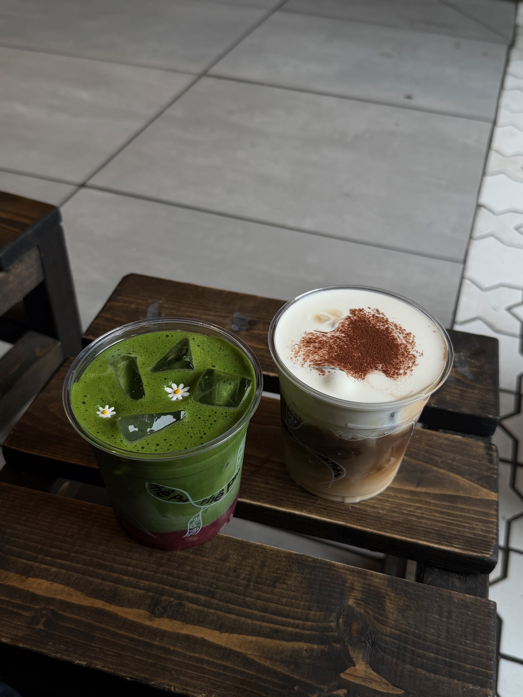

Two summers, one city, a lot of code
This is placeholder writing — replace it with the real story. Talk about how the first internship came about, what you were nervous about, and what actually surprised you once you got there.
Then the second summer: what was different going back somewhere familiar versus somewhere new the first time. What you'd tell yourself before summer one, knowing what you know now.
This is also a natural place to link out to specific trips or cafes from that time — every Seattle spot you wrote up lives in the blog and on the cafe map.